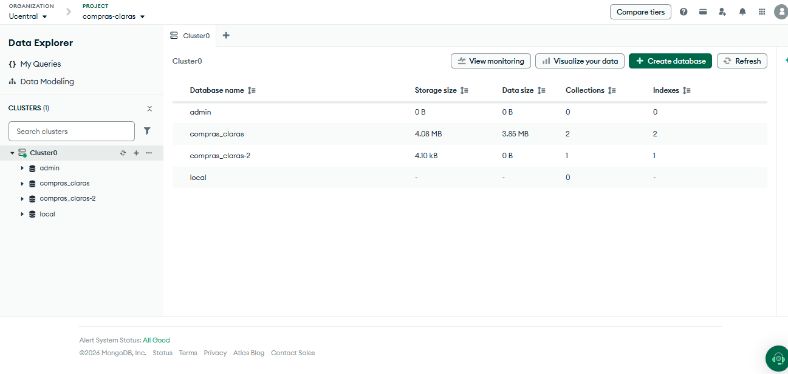
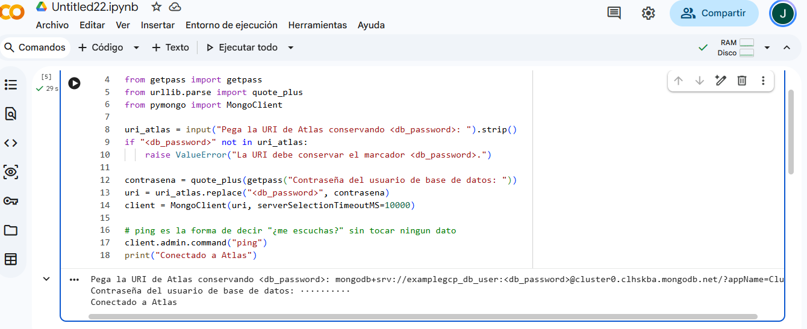
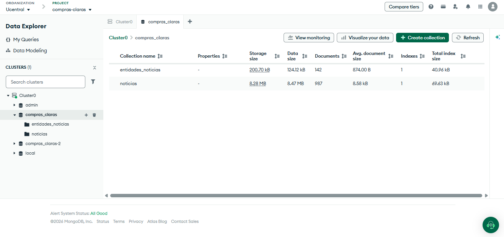
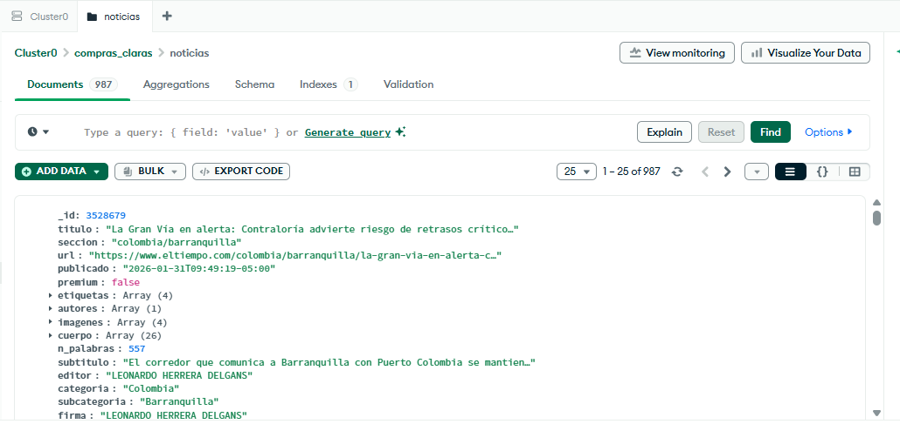
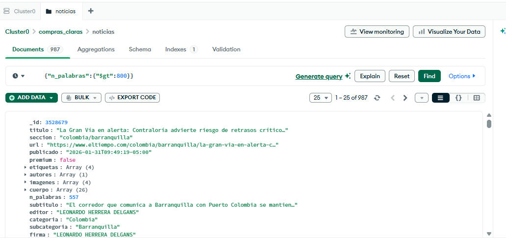
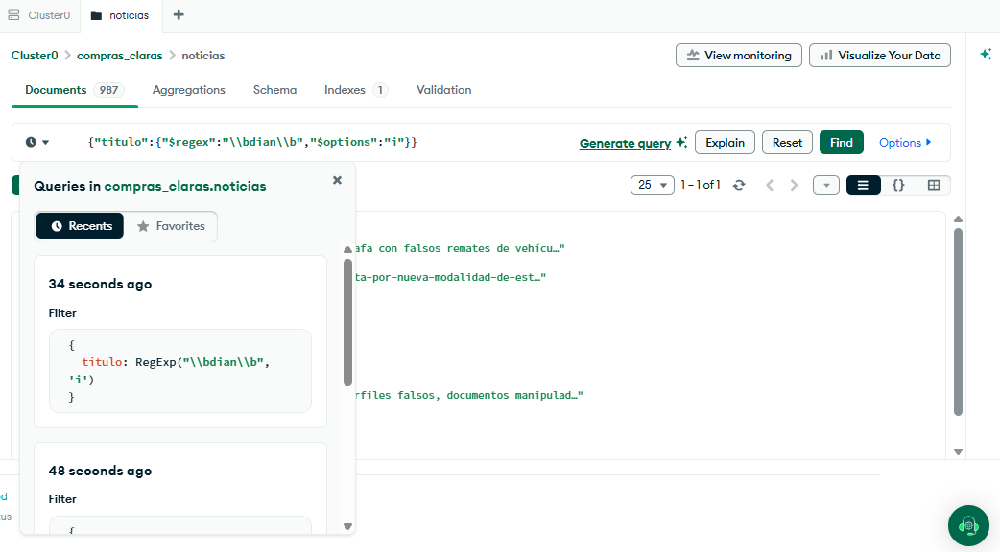
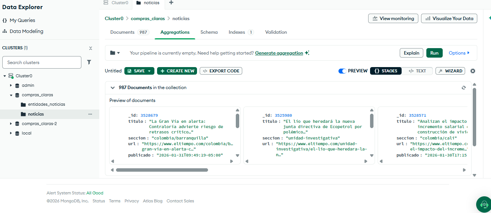

Compras Claras · MongoDB Atlas
De documentos
a una fila para Laura
Crea la base en Atlas, carga dos archivos JSON con Python, consulta con regex,
guarda la lógica como pipelines y vistas, y cruza el resultado con la muestra SECOP en pandas.
🐍 Carga con Python
🧭 Consultas en Atlas
🪟 2 vistas
🐼 SECOP en pandas
⚖️ Priorizar, no acusar
i El problema
Conectarse no basta: Laura necesita una decisión trazable
Una URI probada solo abre la puerta. El producto útil conserva qué se preguntó, cómo se
clasificó y por qué un proceso terminó en la fila de revisión.
Mapa conceptual del recorrido — no es una captura de Atlas
1 · Colabcarga los JSON con insert_many
→
2 · Atlasfiltra, agrega y guarda vistas
→
3 · Colab + pandascruza las vistas con SECOP
→
4 · Laurarevisa 77 procesos explicables
📦Producto: una consulta guardada,
tres pipelines guardados, dos vistas de solo lectura y una fila priorizada con sus límites.
⚠️Límite desde el inicio: entidad ↔ noticia
no equivale a contrato ↔ noticia. El resultado indica dónde mirar; no prueba fraude, causalidad ni irregularidad.
✓ Antes de cargar
Prepara Atlas y tu acceso — sin instalar nada
Todo lo de hoy ocurre en el navegador (Atlas) y en Colab. No hace falta instalar Compass ni ningún otro programa.
1Atlas: Cluster0 disponible y ping correcto desde Colab. Si falta, vuelve a la presentación 1.
2Usuario de base de datos con readWrite solo en compras_claras. No uses atlasAdmin para esto.
30.0.0.0/0 en Network Access — la IP de Colab cambia cada sesión, así que no sirve autorizar solo tu IP actual.
4Tu contraseña real del usuario de base de datos, a mano — Python la va a pedir con getpass(), nunca la escribas en una celda.
🔐La cuenta de Atlas y el usuario de base de datos son identidades distintas. No guardes la contraseña en una captura, documento o repositorio.
← Volver a la presentación 1
2 Crear el destino
Crea la base directamente en Atlas
Nada de esto necesita Compass: Atlas crea bases y colecciones desde su propia interfaz.
- En Atlas, Database → Browse Collections sobre tu
Cluster0.
- Pulsa + Create Database.
- En Database Name escribe
compras_claras.
- En Collection Name escribe
noticias, y confirma.
Resultado esperado: la colección noticias existe y muestra cero documentos — todavía no has cargado nada.
🧭Si la base ya existe, no crees compras_claras-2. Ábrela y comprueba primero el conteo de cada colección.

🖼️Captura pendienteDebe mostrar los nombres compras_claras y noticias, sin URI, usuario ni datos de la cuenta.capturas/11-atlas-crear-base-noticias.png
Evidencia real prevista: destino creado, sin Compass
3 Cargar los dos archivos
La carga es código, no un asistente de importación
Atlas no tiene un botón para subir un archivo JSON desde el navegador — esa función existe en Compass, no en Atlas. La alternativa que no depende de Compass es la misma que ya usaste en la sesión 3: insert_many(), ahora apuntando a tu clúster en la nube.
- Abre Colab y crea una celda nueva. Más abajo, bajo «👉 Haz clic aquí para abrir el
código copiable», está el código completo — cópialo entero y pégalo ahí.
- Pega tu cadena de conexión completa cuando la pida (con
<db_username>/<db_password> si aún los tiene así).
- Ejecuta. Carga
noticias y entidades_noticias en un solo paso.
- Lee los dos conteos que imprime al final.
Controles esperados:
noticias = 987
entidades_noticias = 142
👉 Haz clic aquí para abrir el código copiable
!pip install -q pymongo dnspython
from getpass import getpass
from urllib.parse import quote_plus
from pymongo import MongoClient
import json, urllib.request
uri_pegada = input("Pega tu cadena de conexion completa: ").strip()
usuario = input("Tu usuario de base de datos: ").strip()
contrasena = quote_plus(getpass("Tu contraseña real (no se muestra en pantalla): "))
uri = uri_pegada
if "<db_username>" in uri:
uri = uri.replace("<db_username>", quote_plus(usuario))
if "<db_password>" in uri:
uri = uri.replace("<db_password>", contrasena)
client = MongoClient(uri, serverSelectionTimeoutMS=8000)
client.admin.command("ping")
db = client["compras_claras"]
RAW = "https://raw.githubusercontent.com/jazaineam1/BigData2026/main"
with urllib.request.urlopen(f"{RAW}/Datos/noticias_contratacion_2026.json") as r:
noticias = json.loads(r.read().decode("utf-8"))
db["noticias"].delete_many({})
db["noticias"].insert_many(noticias)
print("noticias:", db["noticias"].count_documents({}))
with urllib.request.urlopen(f"{RAW}/Datos/entidades_en_noticias_2026.json") as r:
entidades = json.loads(r.read().decode("utf-8"))
db["entidades_noticias"].delete_many({})
db["entidades_noticias"].insert_many(entidades)
print("entidades_noticias:", db["entidades_noticias"].count_documents({}))
client.close()
🧩delete_many({}) antes de cada carga hace que la celda sea segura de ejecutar más de una vez: nunca duplica documentos.

🖼️Captura pendienteDebe mostrar los dos conteos impresos, 987 y 142; nunca la URI ni la contraseña.capturas/12-colab-cargar-noticias-entidades.png
Evidencia real prevista: carga completa desde Colab
2 Verificar en Atlas
Abre Data Explorer y reconoce los documentos
El conteo que imprimió Python confirma la carga; Data Explorer permite comprobar que los documentos viven en Atlas y reconocer qué forma tienen.
- En Atlas abre Database → Browse Collections o Data Explorer, según la etiqueta visible.
- Selecciona
compras_claras → noticias → Documents.
- Comprueba
titulo, seccion, publicado y n_palabras.
- Abre
entidades_noticias y comprueba entidad, noticias y la lista ejemplos.
🧭Si no ves las colecciones, confirma que abriste la base compras_claras dentro de tu propio clúster.

🖼️Captura pendienteDebe mostrar la base anonimizada y las dos colecciones, sin correo, organización ni identificadores privados.capturas/14-atlas-data-explorer-colecciones.png
Evidencia real prevista: las dos colecciones en Data Explorer
3 Editar un documento
Registra una revisión sin cambiar la estructura de los demás
Un documento admite un objeto nuevo aunque los otros 986 no lo tengan. Esa flexibilidad es útil, pero exige gobernar el significado.
- En
noticias → Documents, abre un artículo y pulsa el lápiz o Edit Document.
- Agrega el objeto
revision con estado y responsable.
- Guarda y vuelve a abrir el documento para comprobarlo.
"revision": {
"estado": "pendiente",
"responsable": "Laura"
}
Resultado esperado: el artículo conserva sus campos y ahora incluye el objeto anidado revision.
🪟Esto se hace en la colección. Las vistas que crearás más adelante son de solo lectura.

🖼️Captura pendienteDebe mostrar el editor del documento y el nuevo objeto revision, sin datos de la cuenta.capturas/15-atlas-editar-revision.png
Evidencia real prevista: objeto anidado agregado desde Atlas
4 Consultar documentos
Haz que Atlas responda cuatro preguntas
En noticias → Documents, pega un filtro a la vez y pulsa Find. No ejecutes estas consultas en pandas.
| Filtro exacto | Esperado |
|---|
| {"n_palabras":{"$gt":800}} | 189 |
| {"titulo":{"$regex":"salud","$options":"i"}} | 34 |
| {"titulo":{"$regex":"dian","$options":"i"}} | 8 |
| {"titulo":{"$regex":"\\bdian\\b","$options":"i"}} | 1 |
🔎$regex busca patrones;
i ignora mayúsculas. \\b exige un límite de palabra.

🖼️Captura pendienteDebe componer dos resultados reales: subcadena dian y palabra completa DIAN.capturas/16-atlas-filtros-regex.png
Evidencia real prevista: comparación del regex amplio y el preciso
Cómo se leeCada conteo pertenece al filtro activo dentro de este corpus.
Qué nos diceLa subcadena da 8; la palabra completa deja 1. El patrón cambia la evidencia.
Qué NO permite concluir todavíaNo sabemos cuántos artículos publicó el medio fuera del corpus; falta ese denominador.
Qué error común aparece aquíConfundir coincidencia literal con significado o acusación.
5 Guardar la pregunta
Conserva el filtro preciso en My Queries
Una captura congela un resultado. Una consulta guardada conserva el criterio para volver a ejecutarlo.
- Deja activo el filtro de palabra completa
\\bdian\\b.
- Abre el historial de consultas, normalmente identificado con un reloj.
- Marca la consulta con la estrella y nómbrala
dian-palabra-completa-v1.
- Ábrela desde My Queries y confirma que devuelve 1.
dian-palabra-completa-v1.json ↗
💡My Queries guarda filtro, proyección y orden; no guarda una copia del documento. Si cambian los datos, puede cambiar el resultado.

🖼️Captura pendienteDebe mostrar el nombre de la consulta y el filtro; ocultar usuario, proyecto e identificadores.capturas/17-atlas-guardar-consulta.png
Evidencia real prevista: consulta guardada en My Queries
6 Resumir
Construye y guarda el resumen por sección
Un filtro devuelve documentos. Un pipeline encadena transformaciones y produce una fila por grupo.
- Abre
noticias → Aggregations.
- Agrega en orden
$match, $group, $sort y $limit.
- Usa el JSON versionado como fuente; ejecuta y revisa la primera fila.
- Pulsa Save → Save as y nómbralo
resumen-secciones-v1.
resumen-secciones-v1.json ↗
Control esperado: justicia/investigacion · 238 noticias · promedio aproximado 560,5 palabras.

🖼️Captura pendienteDebe mostrar las cuatro etapas y la primera fila del resultado, sin datos de cuenta.capturas/18-atlas-pipeline-resumen.png
Evidencia real prevista: pipeline ejecutado y resultado de control
📏Más documentos en el corpus no significa más publicaciones de la sección. Falta el total de artículos publicados por cada sección.
Ampliación opcional — resumen mensual
Cuando el pipeline central ya funcione, abre el JSON mensual y ejecútalo en
noticias → Aggregations. Control: ene 141 · feb 129 · mar 120 · abr 140 · may 110 ·
jun 92 · jul 175 · ago 80.
resumen-mensual-ampliacion-v1.json ↗
i Antes de crear vistas
Consulta, pipeline y vista conservan cosas distintas
Esta distinción evita guardar un nombre y creer que ya se publicó una salida reutilizable.
| Objeto | Qué conserva | Qué no conserva | Uso aquí |
|---|
| Consulta guardada | filtro, proyección y orden | los resultados | dian-palabra-completa-v1 |
| Pipeline guardado | receta editable por etapas | una colección virtual | clasificar-noticias-v1 |
| Vista | definición que se calcula al leer | una copia física editable | noticias_clasificadas |
Mapa conceptual — no es una captura de Atlas
Coleccióndocumentos editables
→
Pipelinereglas en orden
→
Vistaresultado actual de solo lectura
⚠️Crear la vista no guarda automáticamente una copia editable del pipeline. Guarda primero el pipeline y después crea la vista.
7 Clasificar noticias
Crea la vista noticias_clasificadas
La regla une título y subtítulo, evalúa los regex en orden y asigna una categoría descriptiva.
- En
noticias → Aggregations, agrega las cuatro etapas del JSON en el mismo orden.
- Ejecuta y revisa
clasificacion en la salida.
- Guarda el pipeline como
clasificar-noticias-v1.
- Usa Save → Create view y nombra la vista
noticias_clasificadas.
clasificar-noticias-v1.json ↗
Orden literal de la regla:
terminos_control → proceso_contractual →
ejecucion_obra → contexto.
Si una noticia coincide con dos, recibe la primera.

🖼️Captura pendienteDebe mostrar el nombre de la vista y una salida con clasificacion; ocultar cualquier identificador privado.capturas/19-atlas-vista-noticias.png
Evidencia real prevista: vista creada desde el pipeline de regex
8 Clasificar menciones
Crea la vista menciones_clasificadas
Esta vista clasifica cantidad de apariciones. No clasifica riesgo, gravedad ni responsabilidad.
- Abre
entidades_noticias → Aggregations y agrega las etapas del JSON.
- Comprueba los límites: alta ≥ 20; media 5–19; baja < 5 noticias.
- Guarda el pipeline como
clasificar-menciones-v1.
- Crea la vista
menciones_clasificadas.
menciones-clasificadas-v1.json ↗
Conteo esperado: alta 6 · media 25 · baja 111 = 142 entidades.

🖼️Captura pendienteDebe mostrar la vista y algunos niveles de menciones, sin nombres de usuario ni proyecto.capturas/20-atlas-vista-menciones.png
Evidencia real prevista: vista de niveles descriptivos de mención
9 Validar antes de integrar
Cuenta categorías y revisa los bordes
Una vista puede crearse sin error y aun así contener una regla incorrecta. El conteo de control permite detectarlo.
- En
noticias_clasificadas → Aggregations, agrupa por $clasificacion y suma uno.
- Repite en
menciones_clasificadas agrupando por $nivel_menciones.
- En Documents, comprueba que 20 sea alta, 5 media y 4 baja.
- Intenta editar una vista: Atlas debe impedirlo porque es de solo lectura.
| Vista | Distribución de control |
|---|
noticias_clasificadas | 313 términos de control · 349 proceso contractual · 26 ejecución de obra · 299 contexto = 987 |
menciones_clasificadas | 6 alta · 25 media · 111 baja = 142 |
Cómo se leeCada documento cae en una categoría porque $switch toma la primera regla coincidente.
Qué nos diceLos totales cuadran con las colecciones fuente y los umbrales se aplicaron.
Qué NO permite concluir todavíaLa etiqueta no identifica si la entidad investiga, regula o es cuestionada; falta su papel semántico.
Qué error común aparece aquíRenombrar «mención alta» como «riesgo alto». Son conceptos distintos.
🧪El corpus fue seleccionado mediante palabras clave. Por eso estos conteos describen este corpus, no toda la cobertura del medio.
10 Integrar con SECOP
Vuelve a Colab y cruza la vista con pandas
La consulta documental queda en Atlas. pandas conserva la muestra SECOP de 1.000 procesos y hace la unión exacta por entidad.
- En Atlas autoriza temporalmente el acceso que usará Colab. Si necesitas
0.0.0.0/0, fija expiración máxima de siete días y elimínalo al terminar.
- Abre un Colab nuevo y ejecuta el bloque completo de abajo.
- Pega la URI conservando
<db_password>; getpass() solicitará la contraseña sin mostrarla.
- El código lee las dos vistas desde Atlas y la muestra SECOP de 1.000 procesos desde el repositorio.
- La unión exacta encuentra 163 procesos y la regla explicable deja 77 para revisión.
Resultado esperado: 77 procesos para revisión humana.
📏Cerca del 45 % de toda la muestra usa contratación directa. Esa modalidad sola no prioriza; por eso se combina con otra señal.

🖼️Captura pendienteDebe mostrar 1.000, 163 y 77 como controles; ocultar URI, contraseña y nombres de cuentas.capturas/21-colab-cruce-secop.png
Evidencia real prevista: cruce Atlas ↔ SECOP en pandas
👉 Haz clic aquí para abrir el código copiable — conectar, leer vistas y cruzar con SECOP
!pip -q install "pymongo>=4.10,<5" dnspython pandas
from getpass import getpass
from urllib.parse import quote_plus
from pymongo import MongoClient
import pandas as pd
uri_base = getpass("Pega la URI conservando <db_password>: ").strip()
if "<db_password>" not in uri_base:
raise ValueError("La URI debe conservar <db_password>.")
clave = quote_plus(getpass("Contraseña del usuario de base de datos: "))
uri = uri_base.replace("<db_password>", clave)
client = MongoClient(uri, serverSelectionTimeoutMS=10000)
client.admin.command("ping")
db = client["compras_claras"]
SECOP_URL = (
"https://raw.githubusercontent.com/jazaineam1/BigData2026/"
"main/Cuadernos/datos/secop_chunks/prueba_chunk_0000000.csv"
)
noticias_clasificadas = pd.DataFrame(list(
db["noticias_clasificadas"].find({}, {"_id": 0})
))
menciones = pd.DataFrame(list(
db["menciones_clasificadas"].find({}, {"_id": 0})
))
secop = pd.read_csv(SECOP_URL, low_memory=False)
secop["entidad"] = secop["entidad"].astype("string").str.strip().str.upper()
menciones["entidad"] = menciones["entidad"].astype("string").str.strip().str.upper()
cruce = secop.merge(menciones, on="entidad", how="inner", validate="many_to_one")
es_directa = cruce["modalidad_de_contratacion"].fillna("").str.contains(
"directa", case=False, regex=False
)
sin_respuestas = pd.to_numeric(
cruce["respuestas_al_procedimiento"], errors="coerce"
).eq(0)
cruce["precio_base"] = pd.to_numeric(cruce["precio_base"], errors="coerce")
bandeja_laura = (
cruce.loc[es_directa & sin_respuestas]
.sort_values("precio_base", ascending=False)
.reset_index(drop=True)
)
print("Noticias clasificadas:", len(noticias_clasificadas))
print("Procesos SECOP:", len(secop), "· entidades:", secop["entidad"].nunique())
print("Procesos con cruce exacto:", len(cruce))
print("Procesos en la fila de Laura:", len(bandeja_laura))
if (len(noticias_clasificadas), len(cruce), len(bandeja_laura)) != (987, 163, 77):
raise RuntimeError("Los controles no coinciden; revisa carga, vistas y filtros.")
columnas = [
"id_del_proceso", "entidad", "precio_base",
"modalidad_de_contratacion", "respuestas_al_procedimiento",
"noticias", "nivel_menciones"
]
display(bandeja_laura[columnas].head(10))
client.close()
print("Conexión con Atlas cerrada; los resultados permanecen en memoria.")
11 Leer el resultado
El primer proceso de la fila de Laura
La fila explica por qué mirar primero. No dice qué encontrará la revisión.
| Campo | Control esperado |
|---|
| Proceso | CO1.REQ.5407319 |
| Entidad | MINISTERIO DEL DEPORTE |
| Valor | $168.750.000 |
| Señales | modalidad directa · 0 respuestas · 3 noticias · mención baja |
⚖️La acción correcta es abrir SECOP y revisar los soportes. No afirmar irregularidad ni usar la fila como acusación.

🖼️Captura pendienteDebe mostrar el primer proceso y el total 77; no debe mostrar credenciales ni datos personales.capturas/22-colab-bandeja-laura.png
Evidencia real prevista: salida final para Laura
! La parte más importante
La fila es útil precisamente porque declara su límite
Un número sin lectura parece objetivo, pero puede responder una pregunta distinta de la que Laura hizo.
Cómo se leeEl primer proceso es el de mayor valor entre 77 que cumplen una regla explícita y reproducible.
Qué nos diceEn la muestra coinciden modalidad directa, cero respuestas registradas y una entidad presente en la vista de menciones.
Qué NO permite concluir todavíaNo sabemos si las tres noticias hablan de ese proceso. Falta una referencia contractual verificable dentro del texto.
Qué error común aparece aquíTratar entidad ↔ noticia como contrato ↔ noticia y convertir prioridad de lectura en sospecha.
| Lo que sí puede hacer Laura | Lo que no puede hacer |
|---|
| ordenar el trabajo del equipo | afirmar que hubo fraude |
| abrir el proceso y leer soportes | atribuir causalidad a una noticia |
| pedir el dato contractual que falta | suponer que cero respuestas significa cero competencia real |
🎯Decisión: revisar primero, documentar lo encontrado y mejorar la regla con evidencia; no automatizar una acusación.
✓ Cerrar bien
Conserva la lógica y cierra la puerta temporal
El trabajo permanece en Atlas. La exposición de red no debe permanecer abierta sin necesidad.
1Confirma que el bloque de Colab terminó con client.close(). Cierra la conexión; no borra datos.
2En Atlas elimina 0.0.0.0/0 en Security → Database & Network Access → IP Access List, o confirma su expiración máxima de siete días.
3Confirma readWrite solo sobre compras_claras.
4Conserva dian-palabra-completa-v1, los tres pipelines y las vistas noticias_clasificadas y menciones_clasificadas.
Producto terminado: 987 noticias y 142 entidades persistentes; una consulta y tres pipelines guardados; dos vistas de solo lectura; 77 procesos priorizados con un límite explícito.
🧠Para llevar: Atlas conserva y ejecuta la lógica documental; pandas integra SECOP; Laura decide con revisión humana.